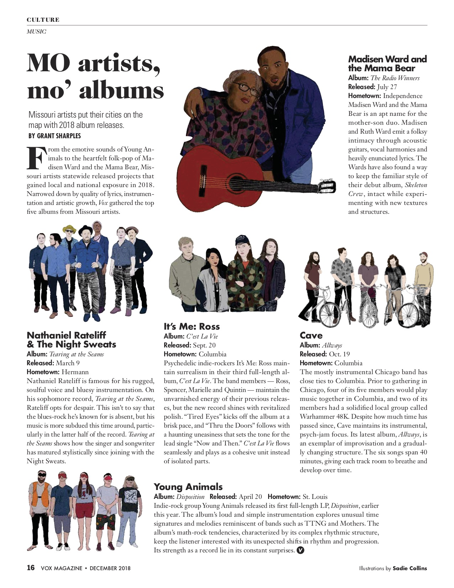

☰
☰
As well as my experience as a designer for the Women's Center, I also illustrate in my spare time, and am very passionate about how illustrations in books and magazines work to bring out magic in the text. Since the beginning of 2018, I have been an illustrator for one of the city magazines, Vox, creating pieces of art to bring vibrancy and color into the magazine's print and digital editions!
I am skilled in the following programs: Procreate, Adobe Photoshop and Krita.
Here are examples of illustrations that have been featured in the digital-only side to Vox:
How to dine like a pro at two of Columbia's famed steakhouses
Below are several examples of print Vox articles featuring my illustrations.

I also wanted to use this page to highlight non-published works that shows the range of my artistic style and skills! Here are some of those works below: